SCIENTIFIC RESEARCH & R&D
Laser spectroscopy, custom ion source engineering, instrument maintenance, and laboratory diagnostics.
LASER SPECTROSCOPY (LIBS) & OPTICS
Experimental setups utilizing Laser-Induced Breakdown Spectroscopy (LIBS) for liquid, solid, and high-temperature analysis.
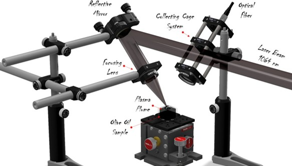
Focusing a 1064nm laser beam onto liquid surface to analyze emitted plasma radiation through an optical cage system and ICCD spectrometer.
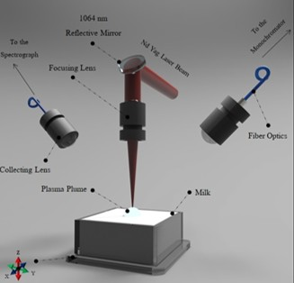
Dual-spectrograph system to capture milk plasma emission lines, and inductive furnace setup in alumina crucible for high-temperature slag diagnostics.
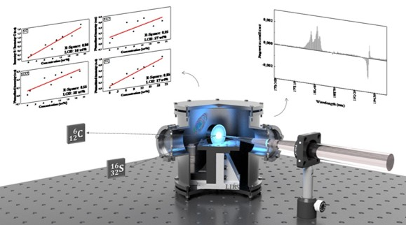
A vacuum chamber solid-sample experimental array. Laser plume radiation collected via a quartz window into an ICCD camera analyzer.
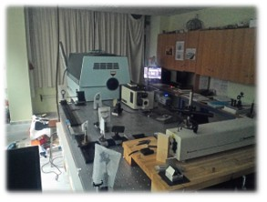
Actual physical configurations of LIBS diagnostic optical benches.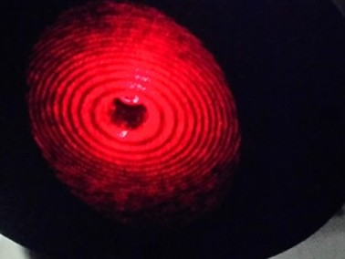
Helium-Neon laser interference structures observed on a target plane.ION SOURCES & MASS SPECTROMETRY R&D
Design, testing, and implementation of custom ambient ionization and plasma sources for Mass Spectrometry applications.
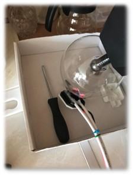
Precision development of ambient dielectric barrier discharge ionization sources with heat assistant probes for compound analysis.
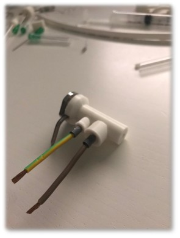
Handmade ion sources designed for mass spectrometry. Features customized ground electrodes and precise gas flow channels.
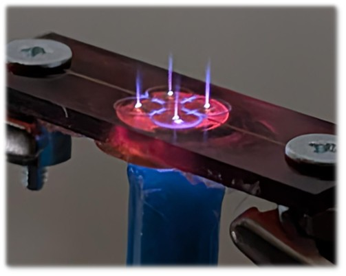
Monolithic micrometric printed argon discharge source for biological tests, supported by a handmade 5-stage voltage multiplier.
INSTRUMENT MAINTENANCE & TESTING
Maintaining high-end analytical equipment, testing chemical treatments, and engineering custom lab components.
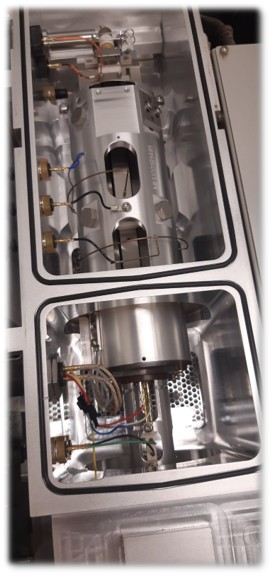
Maintenance of high-end analytical mass spectrometers, cleaning and checking the analyzer, octapole, and sample inlets.
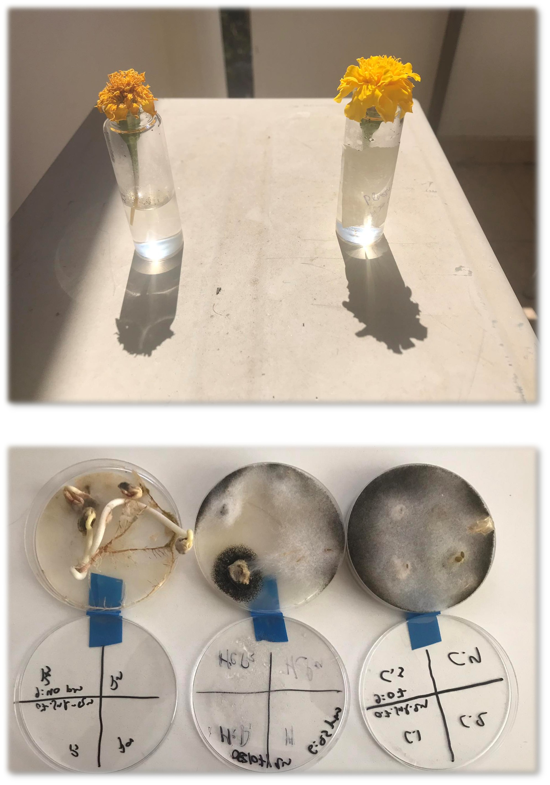
Experimental chemical tests exploring biological applications, including Plasma Seed Treatment (PST) and seed germination controls.
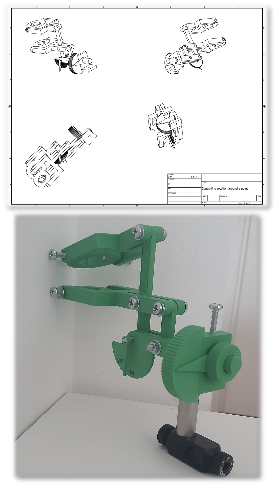
A customized adjustment base, designed in 3D CAD modeling environments and printed via polymer extrusion to align ion sources.